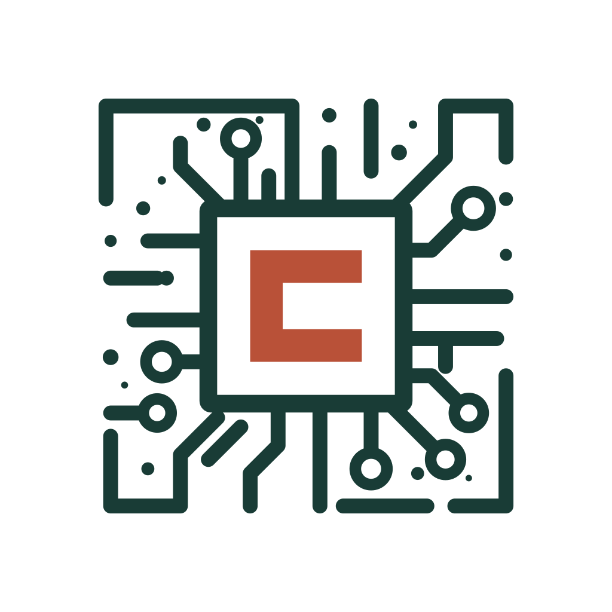

Semiconductors · AI · Business strategy
A clearer view
of what comes next.
Independent research connecting the technology inside the chip to the business decisions around it.

Follow the questions
that matter.
Three areas of focusArtificial intelligence
The hardware and infrastructure shaping the next wave of AI.
Explore Chipstrat ↗Business strategy
The decisions that connect technical progress to market outcomes.
Explore Chipstrat ↗An independent perspective
Engineering depth.
Business context.
Chipstrat is Austin Lyons’s independent research publication, covering semiconductors, AI and business strategy for technology leaders and investors.
More about Austin ↗